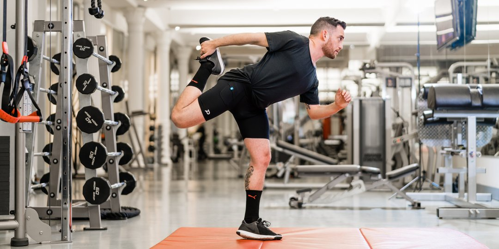

MY HOBBIES
Every Individual have some hobby which they do in their leisure time,not professionally just for enjoyment.
I also have some hobby which is listed below :-
1. I love reading story books. It helps us to improve our communication skill and increase knowledge of vocabulary and grammer.It also acts as a travel partner for us, while we are in train/bus going for a long journey,
story books helps us for spending our leisure time.
2. I am a sports lover since my childhood. I love playing Cricket,football,badminton with my friends whenever i get free time.It keeps me energetic,active and fit. I am a huge admirer of some famous athlete
like Virat Kohli, AB de villiers,Roger Fedderer and Lionel Messi.I love watching their skill and the effort they put on the field for their respective country.
watching them play gives me much confidence,courage and aggression.
3. I also like doing workout which can be considered as my hobby. It makes our body healthy,fit and active as well as improve my mental health and refreshes my mood. I myself believe that every individual should do bit of exercise daily, which can help us in getting rid of various diseases and make us physically fit.
